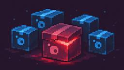

Socket
フィード

Risky Biz Podcast: Eliminating Vulnerabilities Without Upgrading Dependencies
Socket
Socket CEO Feross Aboukhadijeh joins Risky Business Podcast to discuss eliminating open source vulnerabilities at scale without requiring dependency upgrades.
3日前

Introducing Socket Calm: A Syntax Highlighting Theme for VS Code, Vim, and Neovim
Socket
Socket Calm is a free, open source syntax highlighting theme for VS Code, Vim, and Neovim, inspired by Socket's design system.
3日前

Socket Releases Free Patches for 100% of Critical CVEs in RubyGems
Socket
Fix critical RubyGems vulnerabilities without upgrading dependencies. Free security patches are now available with more ways to install and deploy them.
4日前

13 Malicious NuGet Packages Target .NET Developers With Fake Job Assessments
Socket
Socket researchers uncovered 13 malicious NuGet packages linked to fake developer job assessments, DLL side-loading, credential theft, and GitHub-based malware.
5日前

Hardening GitHub Actions Against Insider Threats
Socket
A practical guide to securing CI/CD pipelines against stolen credentials, covering GitHub Actions, trusted publishing, release approvals, and revocation.
9日前
MITRE Acknowledges Inaccurate Publication Timestamps in 87% of Its Recent CVE Records
Socket
MITRE acknowledges inaccurate publication timestamps in 87% of its recent CVE records and plans to retire the legacy system responsible in 2027.
10日前
Optimizely Supply Chain Attack Distributes Malware Across Global Brands
Socket
Attackers exploited Optimizely to inject malicious JavaScript into major websites, delivering cryptocurrency clippers, card skimmers, and iOS malware.
11日前
Microsoft’s agent-framework PyPI package Compromised with Credential Stealer
Socket
Compromised agent-framework versions 1.26.1 and 1.26.2 on PyPI use .pth startup hooks to exfiltrate Azure, GitHub Actions, and CI/CD credentials.
11日前
pnpm Introduces New Lockfile Format to Reduce Git Merge Conflicts
Socket
pnpm has introduced an experimental lockfile format designed to reduce Git merge conflicts by changing how dependencies are recorded.
11日前
ESLint Ends Paid Contributor Program as AI Upends Open Source Collaboration
Socket
From Rust to Godot and curl, open source projects are tightening contribution rules as AI-generated code strains maintainers and changes how developers collaborate.
14日前